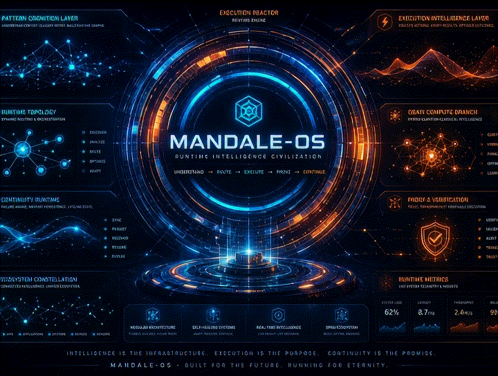
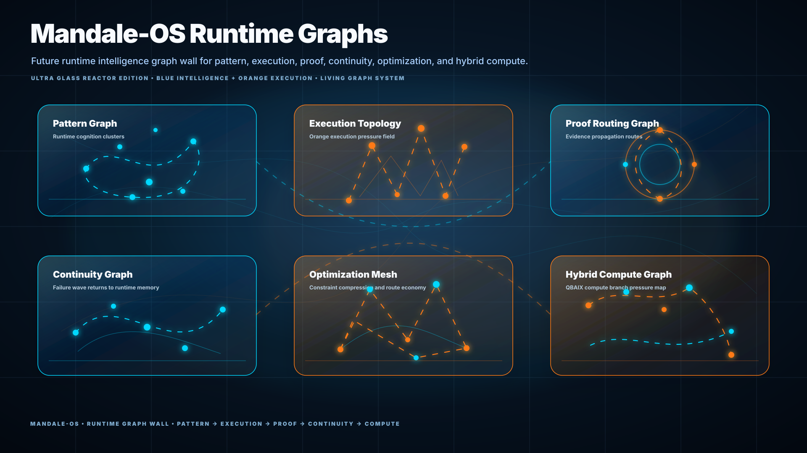
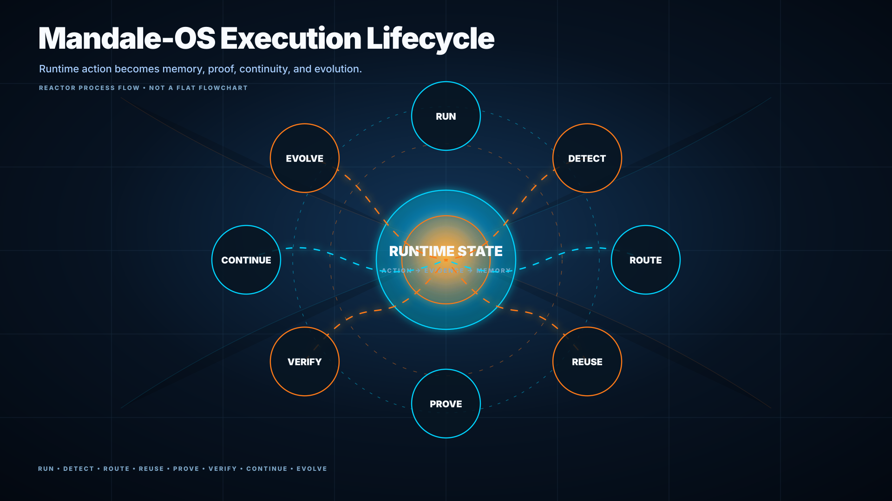
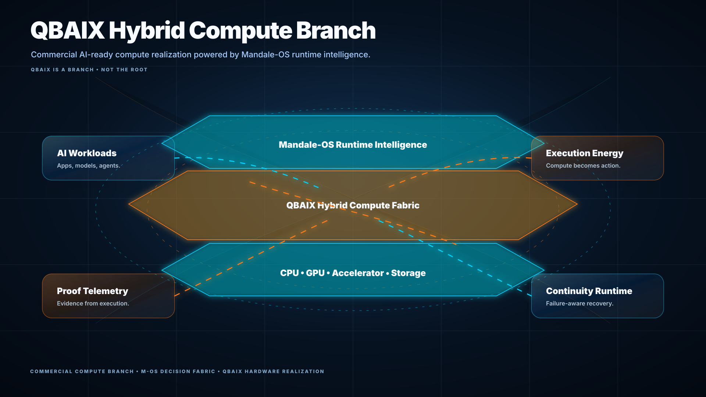
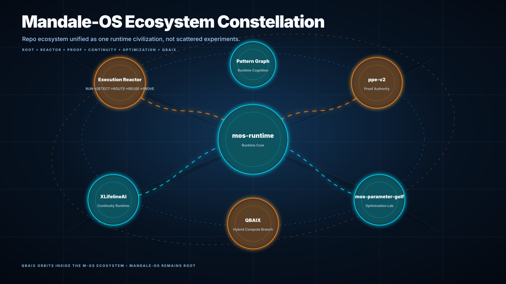
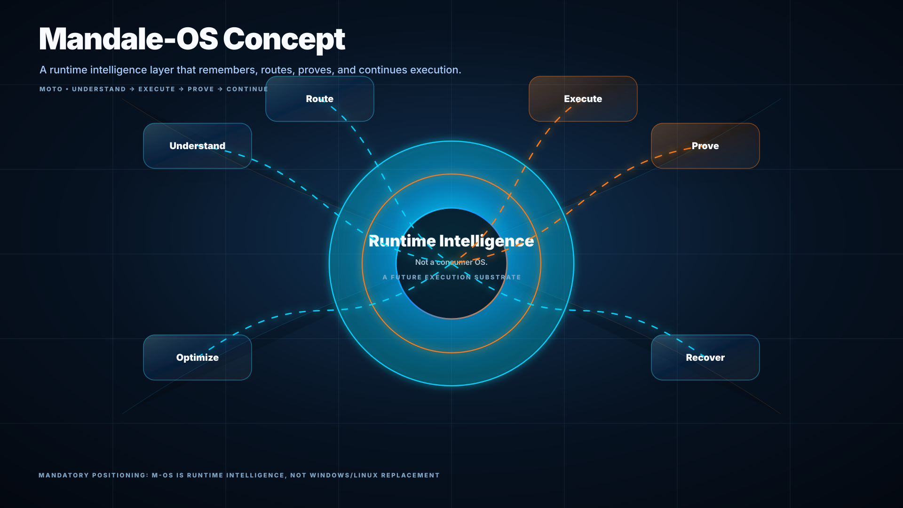

Mandale-OS
Runtime Intelligence Civilization
Mandale-OS is the root ecosystem for pattern cognition, execution routing, proof intelligence, continuity-aware runtime behavior, optimization, and QBAIX hybrid compute realization.
It is not a consumer operating system. It is a future runtime intelligence layer: understand → route → execute → prove → continue → evolve.

Core Doctrine
Mandale-OS treats execution as a living runtime process, not isolated task completion. The ecosystem asks whether future systems can recognize execution patterns, route intelligently, reuse memory, prove behavior, and continue after disruption.
Pattern Cognition
Recognize structure and intent before execution begins.
Blue DomainExecution Reactor
Convert routing decisions into proof-aware runtime action.
Orange DomainContinuity Runtime
Keep state, memory, and recovery paths alive under failure.
Survival LayerProof Intelligence
Make execution emit evidence, verification, and authority state.
Proof LayerOptimization Lab
Reduce context, compress routes, and improve runtime efficiency.
Efficiency LayerQBAIX Branch
Commercial hybrid compute realization around the runtime intelligence root.
Compute BranchArchitecture + Ecosystem
Mandale-OS is the root. QBAIX is not the root; it is the commercial AI-ready hybrid compute branch. M-OS runtime research, execution memory, proof, continuity, and optimization all orbit one architecture.


Runtime Graph Intelligence
The graph is the system language: intent becomes pattern, pattern becomes memory, memory guides routing, routing drives execution, execution emits proof, and proof feeds continuity.
| Graph | Meaning |
|---|---|
| Pattern Graph | Structural recognition and intent classification. |
| Execution Topology | Action pathways and execution pressure. |
| Proof Routing Graph | Verification and evidence movement. |
| Continuity Graph | Recovery, persistence, and runtime survival. |
| Hybrid Compute Graph | QBAIX compute branch and hardware realization. |
Runtime Topology
The topology view explains the Mandale-OS execution nervous system: intent, pattern, memory, route, execution, proof, continuity, optimization, and QBAIX compute branch.


Execution Lifecycle
Mandale-OS connects execution to memory and proof. Execution does not always start from zero; known patterns can be routed, reused, proven, and evolved.
QBAIX Compute Branch
QBAIX represents the commercial hybrid compute realization layer around Mandale-OS. It connects runtime intelligence to CPU, GPU, accelerator, memory, storage, and AI-ready infrastructure systems.
| Layer | Role |
|---|---|
| Mandale-OS Runtime | Decision, routing, proof, continuity, optimization. |
| QBAIX Fabric | Commercial AI-ready hybrid compute realization. |
| Hardware Layer | CPU, GPU, accelerator, storage, memory. |

Visual Asset Wall
All assets live under /docs/assets/svg. This page references the canonical repo-safe paths.




Repository Ecosystem
Mandale-OS is the root surface; these repositories become specialized branches of one runtime intelligence ecosystem.
Founder + Research Identity
Mandale-OS is part of Raaj Mandale’s broader systems-architecture research ecosystem spanning runtime systems, QBAIX hybrid compute, XPADI survivability, and execution-governance concepts.